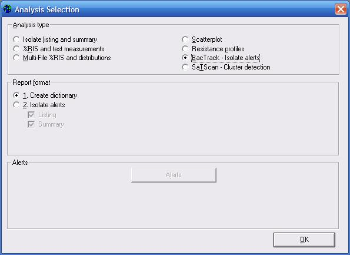

WHONET now permits the user to take advantage of pre-defined or user-defined expert rules that can benefit the user in data entry and in clinical reporting. An additional unique feature of the WHONET expert system is the integrated use of expert rules in data analysis.
At present, WHONET 5.4 includes approximately 200 microbiological rules. In this first version of the expert system, pre-defined expert rules cannot be edited, but individual rules can be turned on or off by the user. In addition, users are also free to develop their own expert rules for reporting and analysis.
Rules are flagged according to the following alert categories.
- Quality assurance
- Unlikely resistance
- Unlikely susceptible
- Unlikely phenotype
- Disk diffusion is not recommended for this organism and antibiotic
- Other problem
- Microbiological alerts
- Important microbial species
- Important antimicrobial resistance
- Save the isolate
- Send the isolate to a reference laboratory
- Other alert
- Clinical alerts
- Alert the infection control team
- Therapy comment
- Priority
- High priority
- Medium priority
- Low priority
1A. Configuration of microbiological alerts
Begin WHONET, select your laboratory, and click on “Modify Laboratory”. You will see a new button on the screen for “Alerts”. Click on this button, and you will see the following screen.
Predefined alerts
In the example, a rule for Enterobacteriaceae non-susceptible to carbapenems has been selected. Details of the rule appear below. The software customizes the rules depending on the antimicrobials which you test in your laboratory. You can click on “Active rule” to activate or deactivate the rule. At the top of the screen, you can decide whether you want to view all rules, or only rules of a particular type, for example Quality control rules.
There is also a button called “Select pre-defined alerts”. At present, there is only one set of expert rules defined in WHONET, but it is anticipated that in the future, some countries or projects may wish to create their own pre-defined sets for use in the surveillance network.
User-defined alerts
Click on “New”, and a screen similar to the following will appear. To define a rule, first give a name to the rule, for example “S. aureus and spa typing”. You can indicate whether this is a high, medium, or low priority rule. In the area “Define the selection criteria”, use the “Organisms” and “Isolates” buttons in the same way that you would in WHONET data analysis to select the organism/isolate criteria for the alert.
Now that you have defined the criteria which will trigger the alert, you can indicate that details of the alert back to the user. Use “Alerts” to indicate that category and type of alert, and select “Messages” to enter any messages you wish to display back to the microbiologist or to the clinician. If you click “Alert”, you will get the following screen:

Indicate the flags which you wish to apply to the new alert, and click “OK”.
If you click on “Messages”, you will get the following. Indicate any messages you wish to send to the microbiologist or clinician, and click “OK”. When you complete all details of your new alert, you can return to the main configuration screen to save your modifications.
1B. Alerts and Data entry
Alerts are a significant enhancement to the data entry program. They can assist in the identification of typing errors, prompt notification of resistance results, and educational information on recommended laboratory testing practices.
Go to the Data Entry program, and process with normal entry of information. As you begin to enter results, any alerts triggered will appear automatically in the lower right-hand corner of the screen, as in the figure below.
If there is a “High priority” alert, you will receive an alert similar to the following.
When you save the isolate, you will get a summary of all of the alert messages.
1C. Alerts and Data analysis
One of the powerful features of the expert system is the integration of microbiological alerts into analysis tools. This will facilitate a quick review of large amounts of data, highlighting possible laboratory errors or important resistance findings. For national data managers, this feature can facilitate the prompt feedback to laboratory participants and further identification of problems identified.
In Data Analysis, microbiological alerts are integrated into a two main areas: 1. isolate listings and 2. BacTrack – Isolate alerts. To test out the new features, you may use the WHO Test Hospital sample database or your own. The following screens were prepared with the WHO Test Hospital data.
Isolate listings: Go to Data Analysis, and choose “Analysis Type”. Click on “Isolate listing and summary”. Click on the new option: “Include isolate alerts”.
Click on “Alerts” to see additional options. As you can see in the below screen, you can include all alerts in the analysis, or only certain categories of alerts of interest to you. By default, WHONET will include all High and Medium priority isolate alerts from all alert types. Indicate the alerts that you want included in your analysis. Then click “OK”, and then “OK” again to return to the main analysis screen.

For “Organisms”, select “ALL” organisms. For “Data files”, select “w0195who.tst”. Then “Begin analysis”.
The left portion of the screen will look like the below. This is unchanged from earlier versions of WHONET. WHONET will display test interpretations for this analysis rather than zone diameters of MIC values.
The right portion of the screen looks like the following.
The usual line-listing from earlier versions of WHONET has now been supplemented with microbiological comments about potentially incorrect or important results. By clicking on any column heaing, the results table can be sorted by that column. In this way, it would be easy to see a list of isolates that should perhaps be repeated and sent to a reference laboratory if necessary.
BacTrack – Isolate alerts
In the isolate listing and summary, this user view results from all isolates, many of which may have alert comments. In the “Isolate alerts” feature, only strains with alerts are presented to the user. Alerts include a combination of microbiological rules, as described above, as well as statistical alerts for isolates occurring in low frequency according to the historical data of that laboratory.
To take advantage of the statistical “low frequency” alerts, you should first create a BacTrack reference dictionary with historical data from this laboratory – for example, the 2005 data file. You will then compare your new data file against this historical data. Alternatively, you could create the BacTrack dictionary using the new data file.
For this example, choose “BacTrack – Isolate alerts” and “Create dictionary”. Then click “OK”. For Organisms, WHONET will automatically include “ALL” isolates. For data files, select “w0195who.tst”. Then “Begin Analysis”. When the analysis is finished, you will receive a message “BacTrack has completed the dictionary.”

Now return to “Analysis Type” and select “BacTrack – Isolate alerts”, “Isolate alerts”. As earlier, you can click on “Alerts” to select those alerts you would like included in the analysis. You may also set the percent of isolates to be used as a threshold for the determination of “infrequent” results. The default is 5% for each option. To increase the number of flagged isolates, you can increase this percentage. To decrease the number of flagged isolates, then lower the percentage. You can put the percentage at 0% if you want to turn a particular feature off.
When finished your selections, click “OK” to return to the main analysis screen, and “Begin analysis”.
Every isolate included in this printout has at least one alert flag. Statistical “low frequency alerts” are found to the left of the listing, and are marked by a special symbol: 1. “*” – the observed resistance is infrequent, based on the hospital’s local data; 2. “#” – the observed susceptible result is infrequent, based on the hospitals’ data; and 3. “+” – the antibiotic indicated is not frequently tested for this organism, based on the hospital’s data.
In this particular example, examples of “infrequent” results include: E. coli resistant to gentamicin; Enterococcus spp. susceptible to clindamycin; H. influenzae resistant to trimethoprim/sulfamethoxazole; P. aeruginosa resistant to amikacin; P. aeruginosa resistant to tobramycin; and P. mirabilis resistant to ampicillin. While such findings may be common in other institutions, the alerts indicate that these findings are rare (<5%) for the results of organisms in this laboratory. Findings of low frequency may perhaps be due to laboratory error, so should be confirmed; or they may reflect important new resistant strains still present at low levels in the institution.
In contrast to the fixed, pre-defined, globally relevant microbiological expert rules described earlier, a great advantage of the “low frequency” alerts is that alerts are automatically adjusted to the past experience of this particular laboratory for all tested organisms and antibiotics.
After viewing the isolate alert listing, click “Continue” to proceed to the isolate alert summary. The summary tabulates every alert that was encountered in the scanned data. Totals are provided, as well as the type of alert – “quality assurance”, “send to a reference laboratory”, etc. If results from more than one laboratory are scanned, the summary also includes the breakdown of alerts by laboratory, as illustrated in the screen below.